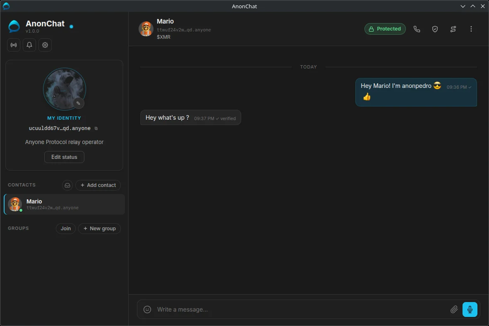
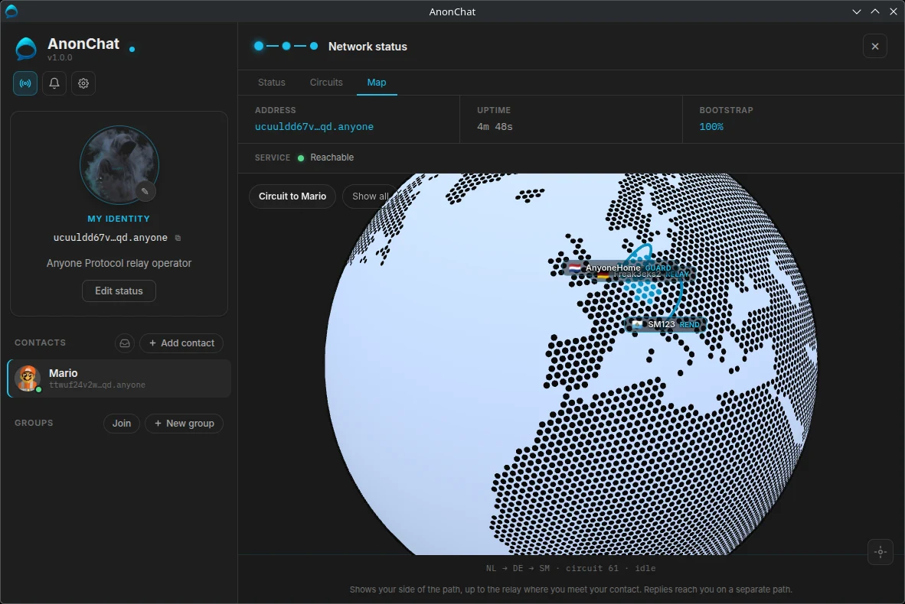
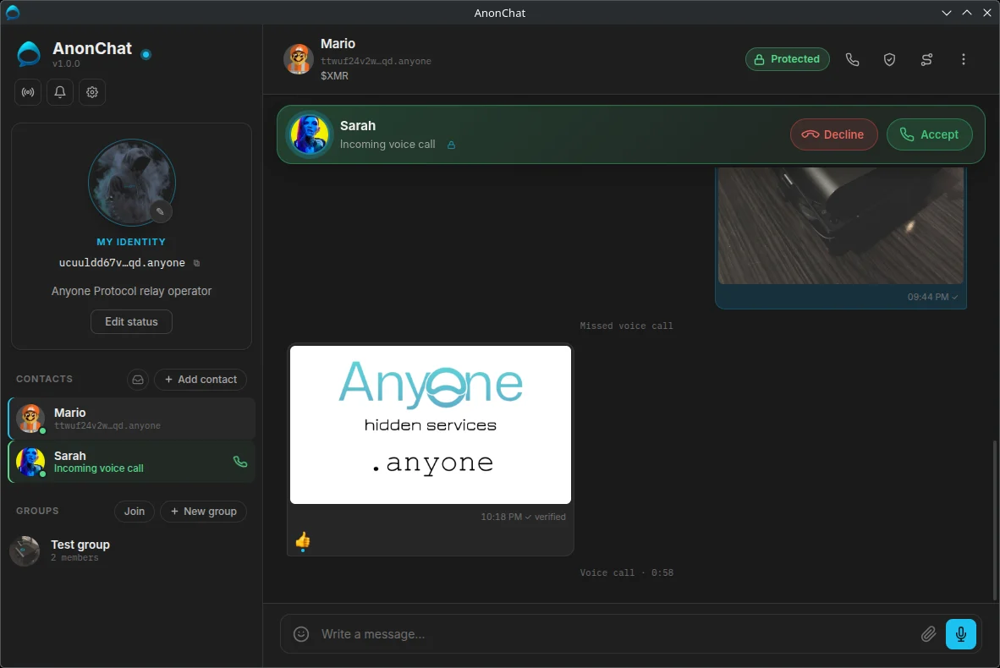
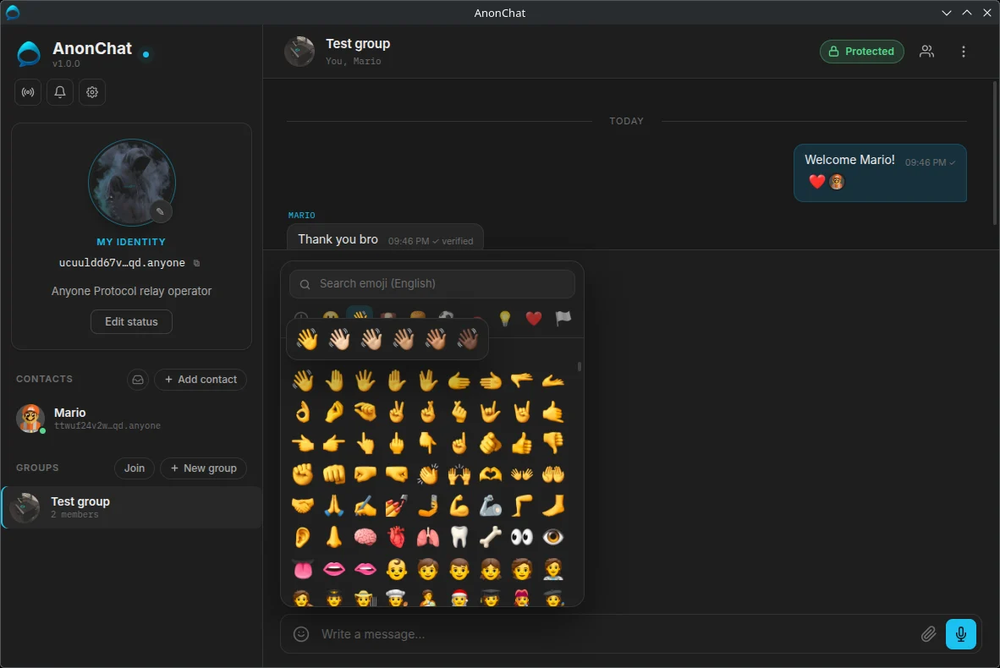
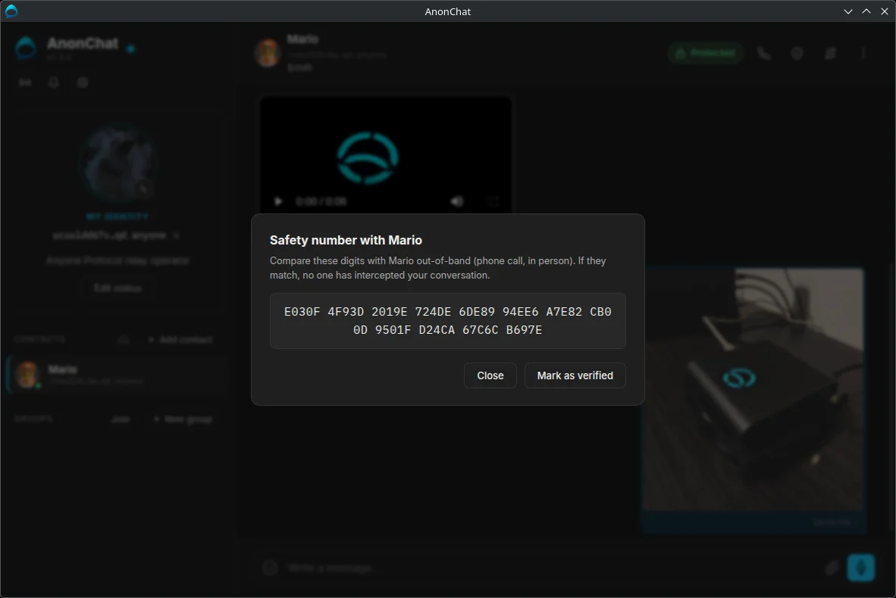

Messaging with no company in the middle.
AnonChat runs on your own computer and talks to your contacts over the Anyone network. No phone number, no account, no central server: nobody can read your messages or keep a record of who you talk to.

- No phone number or account
- End-to-end encrypted
- Your IP address stays hidden
- No central server
- Open source
Everything a messenger needs. Nothing that watches you.
Chats, groups, calls and files, built so that no one else is ever in a position to collect your conversations.
No identity to hand over
Your address is created on your computer the first time you start the app. No phone number, no email, no sign-up. An encrypted backup moves it to a new computer.
Your app is the server
Every AnonChat is its own hidden service. Messages travel directly between computers, so there is no company database to leak or subpoena.
End-to-end encryption
Double Ratchet with an X3DH handshake: a new key for every message. Safety numbers let you confirm no one is in the middle.
Encrypted voice calls
Calls stay inside the Anyone network, never a direct connection, and send audio at a steady rate so silence gives nothing away.
Groups up to 10
Private groups with invite codes, the same encryption as one-to-one chats, plus photos, video, voice messages and files. Members talk directly, even while the admin is offline.
Strangers wait outside
Unknown senders arrive as message requests, text only, until you accept. Flood protection and per-contact stamps keep your inbox yours.
Encryption hides what you say. AnonChat also hides who you talk to.
Most messengers, even encrypted ones, run through one company's servers. Those servers may not read your messages, but they see a great deal around them.
| Centralized messenger | AnonChat | |
|---|---|---|
| How you sign up | Phone number or email, an account | Nothing: the app creates an address |
| Where messages pass | The company's servers | Directly between your computers, over the Anyone network |
| Who sees who talks to whom | The company, and anyone who can make it hand that over | No central party: there is no server to ask |
| Your IP address | Known to the company's servers | Hidden from everyone, your contacts included |
| If the company shuts down | The service stops | Nothing depends on a company |
| Can you check the code? | Usually not | Yes: open source under the AGPL-3.0 |
Watch the path your messages take.
Messages hop through independent relays on the Anyone network. AnonChat shows you every one of them, live, on a 3D globe.
- Every relay on your circuits: nickname, country, bandwidth, role
- The circuit to each contact, drawn on the map
- Build a fresh circuit with one click
- A SOCKS5 proxy for your browser, with a choice of exit country

Familiar to use. Different underneath.



From download to first message in minutes.
Install
Download for your system. Everything is included, the Anyone network client too.
Lock it
Choose a 6-digit PIN or a passphrase. Only you know it; nobody can reset it.
Share your address
Give your
.anyoneaddress to people you trust, in person or another secure app.Say hello
Add each other as contacts. Your first message sets up the encrypted session.
Take your conversations off the grid.
Open source, and yours from the first message.